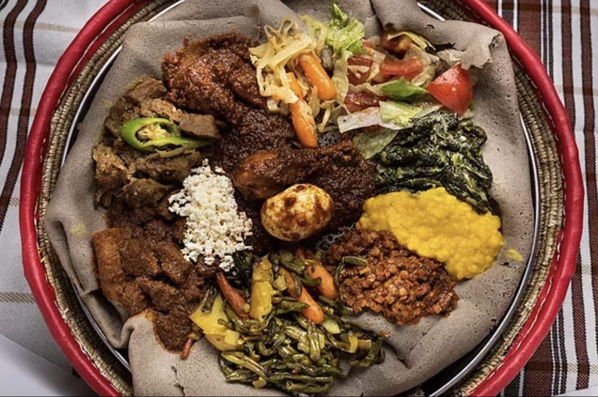

MARTINS GURKBUTIK
Start
Handla
Recept
Erbjudanden
Medlem
-
Recept
Kinesisk Gurksallad
Ett enkelt recept på traditionell kinesisk gurksallad. En uppfriskande, kryddig gurksallad gjord på krossad gurka, sesamolja, sojasås och chilipeppar

Injera
Injera är ett långjäst etiopiskt bröd. Det tar sin tid att göra injerabröd, men det absolut värt det. Du hittar teff- och hirsmjöl i välsorterad butik eller hälsokostaffär.
Ozans Dolma
Dolma är urgröpta grönsaker som fylls med en kryddig färs- och risblandning som sedan får puttra i en smakrik tomatsås. Smakerna som blandas med varandra är delikata.
-